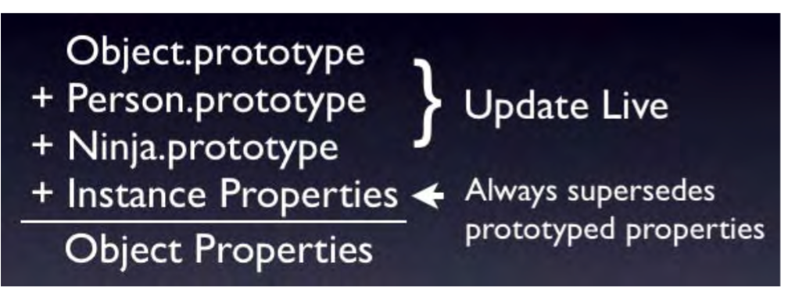

Inheritance and the prototype chain
- Since the prototype of a function is just an object there are multiple ways of copying functionality (such as properties or methods). However only one technique is capable of creating a prototype 'chain': SubFunction.prototype = new SuperFunction();
- Note Make sure that you don't use the Ninja.prototype = Person.prototype; technique. When doing this any changes to the Ninja prototype will also change the Person prototype (since they're the same object) - which is bound to have undesired side effects.
4.1: The order in which properties are bound to an instaciated object

implementing new functionality via prototype
- Since all the built-in objects include these prototypes it ends up giving you all the power necessary to extend the language to your desire.
- An important point to remember when implementing properties or methods on native objects is that introducing them is every bit as dangerous as introducing new variables into the global scope. Since there's only ever one instance of a native object there still significant possibility for naming collisions to occur.
- When implementing features on native prototypes that are forward-looking (such as the previously- mentioned implementation of Array.prototype.forEach) there's a strong possibility that your implementation won't match the final implementation (causing issues to occur when a browser finally does implement the functionality correctly). You should always take great care when treading in those waters.